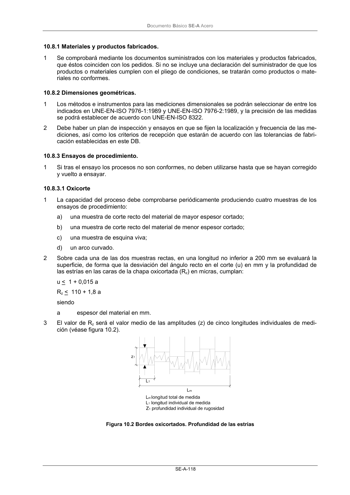

DB-SE-A · 10.8.3 Ensayos de procedimiento. · versión 2007-10-23 · capa oficial
Formatos: JSON compacto · Markdown · PDF fuente
Ámbito del documento · texto del ámbito · documento y tablas
ID técnico a0185 · PDF pág. 120 · jerarquía no validada por persona · contrastado con el literal de la página 120 (candidato tipográfico); no validado por persona · padre: a0182
10.8.3 Ensayos de procedimiento. 1 Si tras el ensayo los procesos no son conformes, no deben utilizarse hasta que se hayan corregido y vuelto a ensayar.

PDF fuente redistribuible: copia fiel enlazada en esta página (SHA256 verificado).